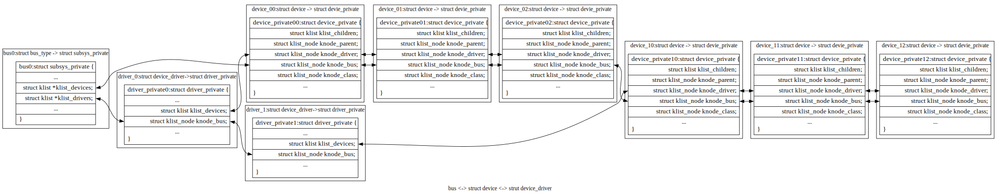
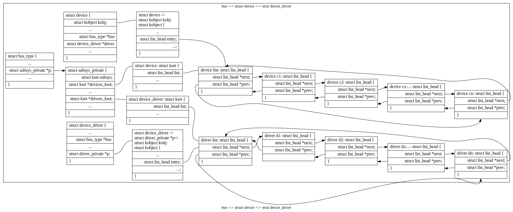

设备驱动¶
linux设备架构：¶
驱动的绑定¶
驱动绑定：设备与控制它的设备驱动程序相关联的过程。绑定动作一般由总线驱动来实现。
总线：总线类型的结构包含系统中总线类型相同的设备列表，当调用device_register时将设备数据插入这个列表。总线结构中还包含一个驱动程序列表，当驱动程序调用driver_register函数时，将驱动插入驱动程序类表末尾，这两种事件会触发设备与驱动程序的绑定： - device_register:查找匹配的驱动，通过设备ID进行匹配。这个ID的格式和语义依赖总线进行实现。由总线驱动程序提供回调函数实现ID的匹配比较，成功返回1,否则为0：int match(struct device * dev, struct device_driver * drv);如果找到了匹配的设备驱动，将 设备的驱动指针只想匹配的驱动结构，并调用驱动程序的probe回调函数。驱动程序对硬件状态进行检查，并对其工作状态进行初始化。 - driver_register原理同上。
设备类：完成探测后设备注册所属的类。设备驱动只能属于一个类，在驱动结构的devclass中进行设置。在执行类中的register_dev回调函数时调用devclass_add_device来枚举类中的设备，并最终将设备注册为某个类。
驱动：当一个驱动匹配到一个设备，设备的结构会插入到驱动结构中的设备列表中。一个设备只能有一个驱动程序，如果已经匹配了要跳过。
sysfs文件：在总线的“设备”目录中创建一个符号链接，该链接指向物理层次结构中的设备目录。在驱动程序的“设备”目录中创建了一个符号链接，该链接指向物理层次结构中的设备目录。设备的目录在类的目录中创建。在该目录中创建一个符号链接，指向设备在 sysfs 树中的物理位置。可以在设备的物理目录中创建指向其类目录或类的顶级目录的符号链接（尽管这还没有完成）。也可以创建一个指向其驱动程序的目录。
移除： - 当设备移除时，对应引用数会变成0。当引用计数为0时，驱动调用remove回调函数。将设备结构从驱动结构的设备列表中去除，并将驱动的应用计数减1.同时删除两者之间的符号链接。 - 当驱动移除时，将对驱动结构的设备列表进行迭代处理，并针对每个设备调用驱动程序的remove回调函数。将设备结构从驱动结构的设备列表中删除并删除两者间的符号文件。
总线类型¶
内核为每类如PCI,USB等设备声明一个静态的总线类型的对象。必须指定名字，可选择性初始化其match回调函数。
1 2 3 4 5 6 | struct bus_type pci_bus_type = {
.name = "pci",
.match = pci_bus_match,
};
extern struct bus_type pci_bus_type;作为全局变量包含在头文件中，供驱动程序使用。
|
注册：总线驱动初始化时，调用bus_register来初始化总线对象中的剩余域并将总线对象插入总线类型的全局列表中（struct bus_type的结构列表）。总线对象注册后，总线驱动就可以使用其中的字段。
回调：match:匹配驱动程序和设备。匹配引用的ID结构特定于总线实现。驱动程序通常会生命它们支持的设备的设备ID组，并保存在驱动结构中。
设备和驱动程序列表 ：分别是 struct devices 和 struct device_drivers 的列表。总线驱动可以自由使用这些列表。使用前可能主要转换为特定的类型（这句话不是很准确？）. 两种列表的迭代函数：（注意：需要确认函数名字？？？？？） - bus_for_each_dev 函数：
bus_for_each_dev 函数¶1 2 3
int bus_for_each_dev(struct bus_type * bus, struct device * start, void * data, int (*fn)(struct device *, void *));
bus_for_each_drv函数：
bus_for_each_dev 函数¶1 2
int bus_for_each_drv(struct bus_type * bus, struct device_driver * start, void * data, int (*fn)(struct device_driver *, void *));
这两个函数遍历相应的列表，并为列表中的每个设备或驱动程序调用回调。所有列表访问都是通过获取总线的锁（当前读取）来同步的。列表中每个对象的引用计数在调用回调之前递增；在获得下一个对象后递减。调用回调时不持有锁。
sysfs
有一个名为“bus”的顶级目录。每条总线在总线目录中都有一个目录，以及两个默认目录：
1 2 3 | /sys/bus/pci/
|-- devices
`-- drivers
|
在总线上注册的驱动程序会在总线的驱动程序目录中获得一个目录：
1 2 3 4 5 6 7 | /sys/bus/pci/
|-- devices
`-- drivers
|-- Intel ICH
|-- Intel ICH Joystick
|-- agpgart
`-- e100
|
在该类型的总线上发现的每个设备都会在总线的设备目录中获得指向物理层次结构中设备目录的符号链接：
1 2 3 4 5 6 | /sys/bus/pci/
|-- devices
| |-- 00:00.0 -> ../../../root/pci0/00:00.0
| |-- 00:01.0 -> ../../../root/pci0/00:01.0
| `-- 00:02.0 -> ../../../root/pci0/00:02.0
`-- drivers
|
导出属性
1 2 3 4 5 | struct bus_attribute {
struct attribute attr;
ssize_t (*show)(struct bus_type *, char * buf);
ssize_t (*store)(struct bus_type *, const char * buf, size_t count);
};
|
总线驱动程序可以使用与设备的 DEVICE_ATTR_RW 宏类似的 BUS_ATTR_RW 宏导出属性。例如，这样的定义：
1 | static BUS_ATTR_RW(debug);等价于 static bus_attribute bus_attr_debug;
|
然后可以使用以下命令在总线的 sysfs 目录中添加和删除属性：
1 2 | int bus_create_file(struct bus_type *, struct bus_attribute *);
void bus_remove_file(struct bus_type *, struct bus_attribute *);
|
设备驱动程序设计模式¶
常见的设计模式
- 1.状态容器;
虽然内核包含一些设备驱动程序，它们假设它们只会在某个系统（单例）上被探测（）一次，但通常假设驱动程序绑定到的设备将出现在多个实例中。这意味着 probe() 函数和所有回调都需要可重入。最常见的实现方式是使用状态容器设计模式。它通常有这种形式：
1 2 3 4 5 6 7 8 9 10 11 12 13 | static irqreturn_t foo_handler(int irq, void *arg)
{
struct foo *foo = arg;
(...)
}
static int foo_probe(...)
{
struct foo *foo;
(...)
ret = request_irq(irq, foo_handler, 0, "foo", foo);
}
|
2.container_of();
添加一个卸载的工作：
1 2 3 4 5 6 7 8 9 10 11 12 13 14 15 16 17 18 19 20 21 22 23 24 25 26 27 28 29 30 | struct foo {
spinlock_t lock;
struct workqueue_struct *wq;
struct work_struct offload;
(...)
};
static void foo_work(struct work_struct *work)
{
struct foo *foo = container_of(work, struct foo, offload);
(...)
}
static irqreturn_t foo_handler(int irq, void *arg)
{
struct foo *foo = arg;
queue_work(foo->wq, &foo->offload);
(...)
}
static int foo_probe(...)
{
struct foo *foo;
foo->wq = create_singlethread_workqueue("foo-wq");
INIT_WORK(&foo->offload, foo_work);
(...)
}
|
对于 hrtimer 或类似的东西，设计模式是相同的，它们将返回一个参数，该参数是指向回调中结构成员的指针。
container_of() 是在 <linux/kernel.h> 中定义的宏,container_of() 所做的是使用标准 C 中的 offsetof() 宏通过简单的减法从指向成员的指针中获取指向包含结构的指针，这允许类似于面向对象的行为。请注意，包含的成员不能是指针，而是要使其正常工作的实际成员。避免了以这种方式使用指向 struct foo * 实例的全局指针，同时仍将传递给工作函数的参数数量保持为单个指针。
总结：
基本设备结构:struct device¶
编程接口： - int device_register(struct device * dev);执行这个函数时，总线驱动发现设备并将设备注册到核心 - 总线需要初始化以下域：
parent;
name;
bus_id;
bus;
当设备的引用计数变为 0 时，设备将从内核中移除。可以使用以下命令调整引用计数：
增加/减少设备引用计数¶1 2
struct device * get_device(struct device * dev); void put_device(struct device * dev);
get_device()如果引用还不是 0（如果它已经在被删除的过程中），将返回一个指向传递给它的struct device结构指针。 - 驱动可以通过以下方式访问设备结构中的锁：
访问结构中的锁¶1 2
void lock_device(struct device * dev); void unlock_device(struct device * dev);
属性：
属性结构¶1 2 3 4 5 6 7
struct device_attribute { struct attribute attr; ssize_t (*show)(struct device *dev, struct device_attribute *attr, char *buf); ssize_t (*store)(struct device *dev, struct device_attribute *attr, const char *buf, size_t count); };
设备的属性可以由设备驱动程序通过 sysfs 导出。
正如关于 kobjects、ksets 和 ktypes 的所有你不想知道的内容中所解释的，必须在生成 KOBJ_ADD uevent 之前创建设备属性。实现这一点的唯一方法是定义一个属性组。
使用名为 DEVICE_ATTR 的宏声明属性：
驱动组织框架
总线，设备和驱动间的关系图：
每个设备结构有指向设备驱动的指针，每个设备最多对应一个设备驱动；每个设备驱动结构中维护一个设备结构列表。采用struct klist结构表示列表，struct klist_node代表节点。
bus,struct device,device_driver与kset,kobject的组织
每个总线结构维护两个struct kset结构，分别为struct kset *devices_kset,struct kset *driver_kset;这两个结构将总线中的代表设备和设备驱动的struct kobject结构通过双向链表组织起来。
tree /sys/bus -L 2
系统中的总线¶1 2 3 4 5 6 7 8 9 10 11 12 13 14 15 16 17 18 19 20 21 22 23 24 25 26 27 28 29 30 31 32 33 34 35 36 37 38 39 40 41 42 43 44 45 46 47 48 49 50 51 52 53 54 55 56 57 58 59 60 61 62 63 64 65 66 67 68 69 70 71 72 73 74 75 76 77 78 79 80 81 82 83 84 85 86 87 88 89 90 91 92 93 94 95 96 97 98 99 100 101 102 103 104 105 106 107 108 109 110 111 112 113 114 115 116 117 118 119 120 121 122 123 124 125 126 127 128 129 130 131 132 133 134 135 136 137 138 139 140 141 142 143 144 145 146 147 148 149 150 151 152 153 154 155 156 157 158 159 160 161 162 163 164 165 166 167 168 169 170 171 172 173 174 175 176 177 178 179 180 181 182 183 184 185 186 187 188 189 190 191 192 193 194 195 196 197 198 199 200 201 202 203 204 205 206 207 208 209 210 211 212 213 214 215 216 217 218 219 220 221 222 223 224 225 226 227 228 229 230 231 232 233 234 235 236 237 238 239 240 241 242 243 244
/sys/bus ├── acpi │ ├── devices │ ├── drivers │ ├── drivers_autoprobe │ ├── drivers_probe │ └── uevent ├── auxiliary │ ├── devices │ ├── drivers │ ├── drivers_autoprobe │ ├── drivers_probe │ └── uevent ├── cec │ ├── devices │ ├── drivers │ ├── drivers_autoprobe │ ├── drivers_probe │ └── uevent ├── clockevents │ ├── devices │ ├── drivers │ ├── drivers_autoprobe │ ├── drivers_probe │ └── uevent ├── clocksource │ ├── devices │ ├── drivers │ ├── drivers_autoprobe │ ├── drivers_probe │ └── uevent ├── container │ ├── devices │ ├── drivers │ ├── drivers_autoprobe │ ├── drivers_probe │ └── uevent ├── cpu │ ├── devices │ ├── drivers │ ├── drivers_autoprobe │ ├── drivers_probe │ └── uevent ├── dax │ ├── devices │ ├── drivers │ ├── drivers_autoprobe │ ├── drivers_probe │ └── uevent ├── edac │ ├── devices │ ├── drivers │ ├── drivers_autoprobe │ ├── drivers_probe │ └── uevent ├── event_source │ ├── devices │ ├── drivers │ ├── drivers_autoprobe │ ├── drivers_probe │ └── uevent ├── gpio │ ├── devices │ ├── drivers │ ├── drivers_autoprobe │ ├── drivers_probe │ └── uevent ├── hdaudio │ ├── devices │ ├── drivers │ ├── drivers_autoprobe │ ├── drivers_probe │ └── uevent ├── hid │ ├── devices │ ├── drivers │ ├── drivers_autoprobe │ ├── drivers_probe │ └── uevent ├── i2c │ ├── devices │ ├── drivers │ ├── drivers_autoprobe │ ├── drivers_probe │ └── uevent ├── machinecheck │ ├── devices │ ├── drivers │ ├── drivers_autoprobe │ ├── drivers_probe │ └── uevent ├── media │ ├── devices │ ├── drivers │ ├── drivers_autoprobe │ ├── drivers_probe │ └── uevent ├── mei │ ├── devices │ ├── drivers │ ├── drivers_autoprobe │ ├── drivers_probe │ └── uevent ├── memory │ ├── devices │ ├── drivers │ ├── drivers_autoprobe │ ├── drivers_probe │ └── uevent ├── mipi-dsi │ ├── devices │ ├── drivers │ ├── drivers_autoprobe │ ├── drivers_probe │ └── uevent ├── mmc │ ├── devices │ ├── drivers │ ├── drivers_autoprobe │ ├── drivers_probe │ └── uevent ├── node │ ├── devices │ ├── drivers │ ├── drivers_autoprobe │ ├── drivers_probe │ └── uevent ├── nvmem │ ├── devices │ ├── drivers │ ├── drivers_autoprobe │ ├── drivers_probe │ └── uevent ├── pci │ ├── devices │ ├── drivers │ ├── drivers_autoprobe │ ├── drivers_probe │ ├── rescan │ ├── resource_alignment │ ├── slots │ └── uevent ├── pci_express │ ├── devices │ ├── drivers │ ├── drivers_autoprobe │ ├── drivers_probe │ └── uevent ├── platform │ ├── devices │ ├── drivers │ ├── drivers_autoprobe │ ├── drivers_probe │ └── uevent ├── pnp │ ├── devices │ ├── drivers │ ├── drivers_autoprobe │ ├── drivers_probe │ └── uevent ├── rmi4 │ ├── devices │ ├── drivers │ ├── drivers_autoprobe │ ├── drivers_probe │ └── uevent ├── sdio │ ├── devices │ ├── drivers │ ├── drivers_autoprobe │ ├── drivers_probe │ └── uevent ├── serial │ ├── devices │ ├── drivers │ ├── drivers_autoprobe │ ├── drivers_probe │ └── uevent ├── serio │ ├── devices │ ├── drivers │ ├── drivers_autoprobe │ ├── drivers_probe │ └── uevent ├── snd_seq │ ├── devices │ ├── drivers │ ├── drivers_autoprobe │ ├── drivers_probe │ └── uevent ├── soundwire │ ├── devices │ ├── drivers │ ├── drivers_autoprobe │ ├── drivers_probe │ └── uevent ├── spi │ ├── devices │ ├── drivers │ ├── drivers_autoprobe │ ├── drivers_probe │ └── uevent ├── thunderbolt │ ├── devices │ ├── drivers │ ├── drivers_autoprobe │ ├── drivers_probe │ └── uevent ├── typec │ ├── devices │ ├── drivers │ ├── drivers_autoprobe │ ├── drivers_probe │ └── uevent ├── usb │ ├── devices │ ├── drivers │ ├── drivers_autoprobe │ ├── drivers_probe │ └── uevent ├── wmi │ ├── devices │ ├── drivers │ ├── drivers_autoprobe │ ├── drivers_probe │ └── uevent ├── workqueue │ ├── devices │ ├── drivers │ ├── drivers_autoprobe │ ├── drivers_probe │ └── uevent ├── xen │ ├── devices │ ├── drivers │ ├── drivers_autoprobe │ ├── drivers_probe │ └── uevent └── xen-backend ├── devices ├── drivers ├── drivers_autoprobe ├── drivers_probe └── uevent
我们分析属性：
static BUS_ATTR_WO(drivers_probe); static BUS_ATTR_RW(drivers_autoprobe);
bus_register函数中创建：
bus_register函数¶1 2 3 4 5 6 7 8 9 10 11 12 13 14 15 16 17 18 19 20 21
/** * bus_register - register a driver-core subsystem * @bus: bus to register * * Once we have that, we register the bus with the kobject * infrastructure, then register the children subsystems it has: * the devices and drivers that belong to the subsystem. */ int bus_register(struct bus_type *bus): retval = kobject_set_name(&priv->subsys.kobj, "%s", bus->name); // /sys/bus/i2c priv->devices_kset = kset_create_and_add("devices", NULL, &priv->subsys.kobj); // /sys/bus/i2c/devices priv->drivers_kset = kset_create_and_add("drivers", NULL, &priv->subsys.kobj); // /sys/bus/i2c/drivers retval = bus_create_file(bus, &bus_attr_uevent); // /sys/bus/i2c/uevent： retval = add_probe_files(bus); |----retval = bus_create_file(bus, &bus_attr_drivers_probe); // /sys/bus/i2c/drivers_autoprobe: 1：自动适配； |----retval = bus_create_file(bus, &bus_attr_drivers_autoprobe); // /sys/bus/i2c/drivers_probe: 设备名称，为设备重新匹配设备驱动；
drivers_autoprobe/drivers_probe具体实现原理¶1 2 3 4 5 6 7 8 9 10 11 12 13 14 15 16 17 18 19 20 21 22 23 24
static ssize_t drivers_autoprobe_store(struct bus_type *bus, const char *buf, size_t count) //设置变量 bus->p->drivers_autoprobe; { if (buf[0] == '0') bus->p->drivers_autoprobe = 0; else bus->p->drivers_autoprobe = 1;//如果为1,则在device_add()函数时运行device_initial_probe(dev)进行设备驱动匹配。进而调用__device_attach(dev,true); return count; } static ssize_t drivers_probe_store(struct bus_type *bus, const char *buf, size_t count)//根据输入的值进行遍历；并进行驱动匹配： { struct device *dev; int err = -EINVAL; dev = bus_find_device_by_name(bus, NULL, buf);//根据名字获取struct device结构 if (!dev) return -ENODEV; if (bus_rescan_devices_helper(dev, NULL) == 0)//如果设备没有匹配的设备驱动：dev->driver为空，并满足锁等要求，运行device_attach(dev)进行设备与设备驱动的匹配：遍历总线中的设备驱动列表，挨个与设备进行匹配。匹配到一个就返回：__device_attach; err = count; put_device(dev); return err; }
uevent 具体实现原理¶1 2 3 4 5 6 7 8 9 10 11 12 13 14 15 16 17 18 19 20 21 22 23 24 25 26 27 28 29 30 31 32 33 34 35 36 37 38 39 40 41 42 43 44 45 46 47 48 49 50 51 52 53 54 55 56 57 58 59 60
static ssize_t bus_uevent_store(struct bus_type *bus, const char *buf, size_t count) // /sys/bus/i2c/uevent { int rc; rc = kobject_synth_uevent(&bus->p->subsys.kobj, buf, count); return rc ? rc : count; } /** * kobject_synth_uevent - send synthetic uevent with arguments * * @kobj: struct kobject for which synthetic uevent is to be generated * @buf: buffer containing action type and action args, newline is ignored * @count: length of buffer * * Returns 0 if kobject_synthetic_uevent() is completed with success or the * corresponding error when it fails. */ int kobject_synth_uevent(struct kobject *kobj, const char *buf, size_t count) { char *no_uuid_envp[] = { "SYNTH_UUID=0", NULL }; enum kobject_action action; const char *action_args; struct kobj_uevent_env *env; const char *msg = NULL, *devpath; int r; r = kobject_action_type(buf, count, &action, &action_args); //所以uevent取值范围为：static const char *kobject_actions; if (r) { msg = "unknown uevent action string"; goto out; } if (!action_args) { r = kobject_uevent_env(kobj, action, no_uuid_envp); goto out; } r = kobject_action_args(action_args, count - (action_args - buf), &env); if (r == -EINVAL) { msg = "incorrect uevent action arguments"; goto out; } if (r) goto out; r = kobject_uevent_env(kobj, action, env->envp); kfree(env); out: if (r) { devpath = kobject_get_path(kobj, GFP_KERNEL); pr_warn("synth uevent: %s: %s\n", devpath ?: "unknown device", msg ?: "failed to send uevent"); kfree(devpath); } return r; }
drivers_autoprobe 设置说明：
drivers_probe 设置说明：
uevent 设置说明：
总线注册：
devres-管理设备资源¶
设备驱动程序: struct device_driver¶
分配：设备驱动程序是静态分配的结构。尽管驱动程序支持的系统中可能有多个设备，但 struct device_driver 将驱动程序表示为一个整体（而不是特定的设备实例）。
初始化：
声明：
注册：
转换总线驱动程序：
访问：
sysfs:
回调：
属性：
linux 内核设备模型¶
平台设备和驱动程序¶
有关平台总线的驱动程序模型接口，请参见 <linux/platform_device.h>：platform_device 和 platform_driver。这种伪总线用于连接具有最少基础设施的总线上的设备，例如用于在许多片上系统处理器上集成外围设备的设备，或一些“传统”PC 互连；而不是像 PCI 或 USB 这样的大型总线指定的。
平台设备：平台设备是通常在系统中显示为自治实体的设备。这包括传统的基于端口的设备和外设总线的主机桥，以及集成到片上系统平台的大多数控制器。它们通常的共同点是从 CPU 总线直接寻址。极少情况下，platform_device 会通过其他某种总线的段连接；但它的寄存器仍然是可直接寻址的。平台设备有一个名称，用于驱动程序绑定，以及一个资源列表，例如地址和 IRQ：
1 2 3 4 5 6 7 | struct platform_device {
const char *name;
u32 id;
struct device dev;
u32 num_resources;
struct resource *resource;
};
|
平台驱动程序： 平台驱动程序遵循标准驱动程序模型约定，其中发现/枚举在驱动程序之外处理，并且驱动程序提供probe() 和remove() 方法。它们使用标准约定支持电源管理和关机通知：
设备枚举：通常，特定于平台（通常是特定于板）的设置代码将注册平台设备：
一般规则是只注册那些实际存在的设备，但在某些情况下可能会注册额外的设备。例如，内核可能被配置为与可能未安装在所有板上的外部网络适配器一起使用，或者同样与某些板可能无法连接到任何外围设备的集成控制器一起使用。在某些情况下，引导固件将导出描述在给定板上填充的设备的表。如果没有这些表，系统设置代码设置正确设备的唯一方法通常是为特定目标板构建内核。这种特定于板的内核在嵌入式和定制系统开发中很常见。
在许多情况下，与平台设备相关的内存和 IRQ 资源不足以让设备的驱动程序工作。板设置代码通常会使用设备的 platform_data 字段提供附加信息以保存附加信息。嵌入式系统经常需要一个或多个用于平台设备的时钟，这些时钟通常会保持关闭，直到它们被主动需要（以节省电力）。系统设置还将这些时钟与设备相关联，以便对 clk_get(&pdev->dev, clock_name) 的调用根据需要返回它们。
旧版驱动程序：设备探测
设备命名和驱动绑定
- platform_device.dev.bus_id 是设备的规范名称。它由两个组件构成：
platform_device.name …也用于驱动匹配。
platform_device.id … 设备实例编号，否则“-1”表示只有一个。
这些是串联的，所以name/id“serial”/0表示bus_id“serial.0”，“serial/3”表示bus_id“serial.3”；两者都将使用名为“serial”的平台驱动程序。而“my_rtc”/-1 将是 bus_id “my_rtc”（无实例 ID）并使用名为“my_rtc”的平台驱动程序。
驱动程序绑定由驱动程序核心自动执行，在找到设备和驱动程序之间的匹配后调用驱动程序探针（）。如果probe() 成功，则驱动程序和设备照常绑定。有三种不同的方法可以找到这样的匹配：
每当注册设备时，都会检查该总线的驱动程序是否匹配。平台设备应在系统引导期间尽早注册。
当使用 platform_driver_register() 注册驱动程序时，将检查该总线上的所有未绑定设备是否匹配。驱动程序通常在引导期间稍后注册，或者通过模块加载进行注册。
使用 platform_driver_probe() 注册驱动程序的工作方式与使用 platform_driver_register() 类似，但如果其他设备注册，则以后不会探测该驱动程序。（没关系，因为此接口仅适用于非热插拔设备。）